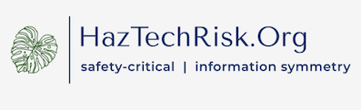
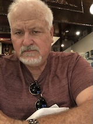
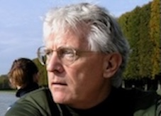

Independent research on regulatory policy, safety, environmental health, and the efficacy of safety-critical protections.
We specialize in information symmetry — working with organizations and communities to upgrade public understanding of hazardous technology risks, and providing the technical expertise needed to level the playing field. We critique, clarify, and where warranted agree or disagree with risk analyses prepared by industry, government agencies, consultants, regulators, and media. We are science-driven, politically agnostic, environmentally conscious, and public-health concerned.
We work with nonprofits, civic groups, community action organizations, political staffs, student organizations, NGOs, and the non-partisan press — giving these organizations access to university research-level expertise that would otherwise be unavailable, along with tailored technical seminars, training, report critiques, and analysis.

Director of Predictive Analytics
Marty Wortman joined HazTechRisk.Org following more than three decades in engineering academia. He is a leading authority on reliability, risk, and technology assessment, with particular emphasis on production operations, and has consulted for industry and federal agencies including NSF, DOE, DOD, and OSD. He is widely recognized for research and teaching on predictive probability modeling and connecting operational physics with economic outcomes, has authored numerous publications and technical reports, and has served on editorial boards of leading journals in his field.
Director of Safety & Policy Analysis
Pranav Kannan is a chemical engineer by training, with research emphasis in process safety and industrial experience focused on using operational data to enable safer operations and optimized decisions. Originally from Mumbai, India, he has worked extensively in the United States with the Mary Kay O'Connor Process Safety Center and the Ocean Energy Safety Institute at Texas A&M University, researching corrosion, risk analysis and modeling, and human factors engineering, with publications in peer-reviewed journals and conferences.

Director of Engineering Analysis
Ernie Kee brings over 40 years of experience to HazTechRisk.Org, recognized for developing industry applications focused on regulatory compliance, risk assessment, and emergency operations support. His experience includes service as a unit nuclear reactor engineer and engineering technical advisor to nuclear operations management, and research appointments with the University of Illinois, Idaho National Laboratory, and Texas A&M University. He is a veteran of the U.S. Navy Submarine Service.